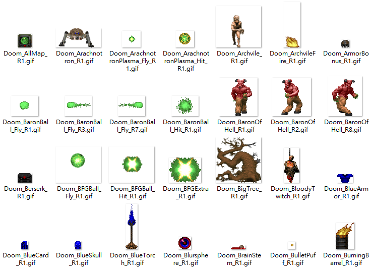
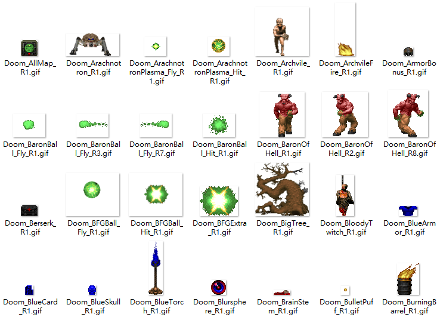

Sprite Animator for Doom, Heretic, Hexen, and Strife
Introduction
This tool converts sprites from a WAD to a sprite sheet...

a CSS animation...
or an animated GIF...
in respect of sprite offset and required size to fit every individual sprite.
Usage Instruction
There is an "Example" folder which contains all necessary elements to start your first attempt at making your own sprite sheet / animation.
(WAD files are limited to DOOM2.wad, TNT.wad or Plutonia.wad in this example.)

(You might need to create your own way of renaming other files for other games.)
Tadaaaaaaaah!
 

Who Are Getting Exported?
All files are exported to Example/Export_Doom/.
| SpriteSheet/ | All sprite sheets. |
|
SpriteSheet/_DoomAnimation.css SpriteSheet/_DoomAnimation.html |
All animated sprites by CSS and an HTML to view the result. |
| DoomFullSpriteSheet.json | Contains information about every sprite from file name of the sprite sheet, size of each sprite, and frame name with rotation, which is useful if you want to make your own animation based on the sprite sheet exported. |
| AnimatedGIF/ | All animated GIFs. |
For More Information About How to Make My Own Animations
Please open definition JSON file "Example/Doom_Definition.json" in a text editor.
Where to Get This
GitHub. Absolutely.
Possible Known Issues
- Never tested on sprites with different colormaps to one sprite sheet or GIF.
- Never tested on sprites outside 8-bit-indexed PNG images.
- Do not use absolute paths in definition JSON file since it is designed to work on relative paths.
- This is not a production-grade application, so there are some places skipping sanity checks, which might cause exceptions.
Credit
AnimatedGif library for creating animated GIF.